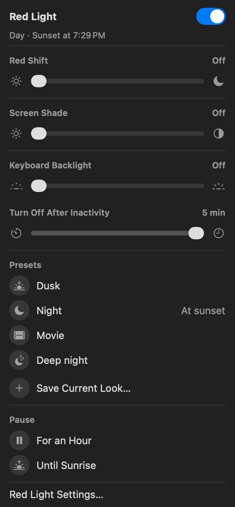
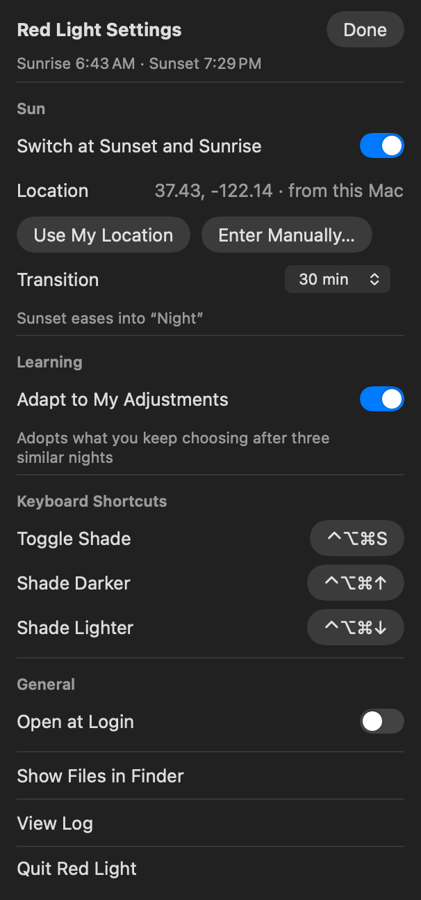

Nightfall takes the blue light out of your Mac at sunset and gives it back at sunrise. Not warmer. Gone. The keyboard too, dimmer than the system will let you go.

Three things the system can't do on its own, in one menu bar panel that looks like it belongs there.
Night Shift warms the white point and stops. Nightfall scales the display's blue channel to zero at the transfer table, the layer beneath every app, then keeps going. Text stays crisp the whole way.
The backlight keeps responding under the slider's minimum. Nightfall reaches 0.1%, a tenth of the least the system offers, and switches it off after five seconds of stillness.
Change something by hand and it lets you. Change it the same way on three of the last fourteen nights and that becomes the default. One notification, once, and a single command to undo.
Two mechanisms, opposite strengths, one slider. Channel scaling until blue hits zero at 60%, then a small luminance-preserving tint so the green being removed comes back as brightness instead of fading to black.
Not a screenshot. Drag the slider and this window follows the app's real curve.
Body text stays legible at every stop. A link still reads as a link.
Blue and green are multiplied down in the display's own gamma table. Every pixel keeps its brightness ordering, so edges, text and UI stay exactly as sharp. This is the range Night Shift works in, extended to zero.
Blue is gone. No tint yet. The most legible a screen can be with no blue light in it, and where most people should stop for work.
Apple's Color Tint maps each pixel to its brightness before mixing toward red, so nothing disappears. Used past the knee and capped at 50%, it does what heavy tints can't: go deep without turning the screen into a red blob.
It knows where you are and when the sun goes down there. You never think about it again, which is the whole point of a protocol.
Sunset eases the blue out and the keys down the way dusk does, so you never see it happen. Open the lid at 11 PM and it is already right: wake triggers an immediate check, and a fade you slept through is picked up at the point the clock says it should be.

Color work at eleven, a late call, a movie. Pause for an hour or until sunrise and your day look comes back exactly, to the setting. What you do while paused is not a preference, so it is not learned.
Melanopsin ganglion cells in the retina don't form images. They tell the body what time it is, and they respond most strongly to blue near 480 nm, exactly what displays emit. Evening exposure holds melatonin back and pushes the circadian clock later. Warming the screen helps. Removing the blue helps more.
Sources: Chang, Aeschbach, Duffy & Czeisler, Evening use of light-emitting eReaders negatively affects sleep, circadian timing, and next-morning alertness, PNAS 2015 · Berson, Dunn & Takao, Phototransduction by retinal ganglion cells that set the circadian clock, Science 2002. Nightfall reduces evening blue light exposure. It is not a medical device and makes no medical claims.
Every feature, forever, for nobody's money. There is no Pro tier because there is no company. The code is on GitHub and the only thing it wants from you is the evening.
An Apple silicon Mac on macOS 26 or later, and the Xcode Command Line Tools to build it. Clone the repo and run the installer; it compiles the engine and the app from source so you can read every line first. Location is read from the Mac, used for sunrise and sunset, and stays on the Mac.
The color work uses Apple's public frameworks. The keyboard uses the same private interface the system slider does; if Apple changes it, that part waits for an update and everything else carries on. The display's color tables are restored the instant the app quits, so nothing can get stuck.
Night Shift shifts the white point warmer and stops, with blue still in the light. Nightfall drives blue to zero at 60% and continues past it, and it also handles the keyboard, the shade, the fade, the pause, and the learning. Night Shift is a warmer noon. Nightfall is dusk.
It removes a well-documented signal that delays melatonin and shifts your clock. That is what evening light hygiene can do, and in controlled studies the effect is not small. Whether your tracker moves depends on the rest of your stack: caffeine timing, the hour, the phone on the nightstand. Run it as an n=1 for two weeks and read your own data.
Because at high intensity a tint collapses hue and everything becomes the same red. You can't tell a link from the word beside it. Nightfall removes blue at the channel level first, where legibility is untouched, and only adds a modest tint past the point where blue is already zero.
No. There is no server and no account. Location comes from macOS Location Services, is used to compute sunrise and sunset, and is written to a file in your home folder. If you prefer, type coordinates in and it never asks.
Yes. The backlight is controlled through the same private CoreBrightness interface the system's own slider uses. If Apple changes it in an update, the keyboard feature may pause until Nightfall is updated. The display features use public frameworks and are unaffected.
No. Blue light is blue light on any panel. The "red blob" people hit with heavy tints is the tint collapsing hue, not the display. Nightfall's curve is designed so that doesn't happen.
Install once. It runs at sunset, every night, and gives the day back at sunrise.